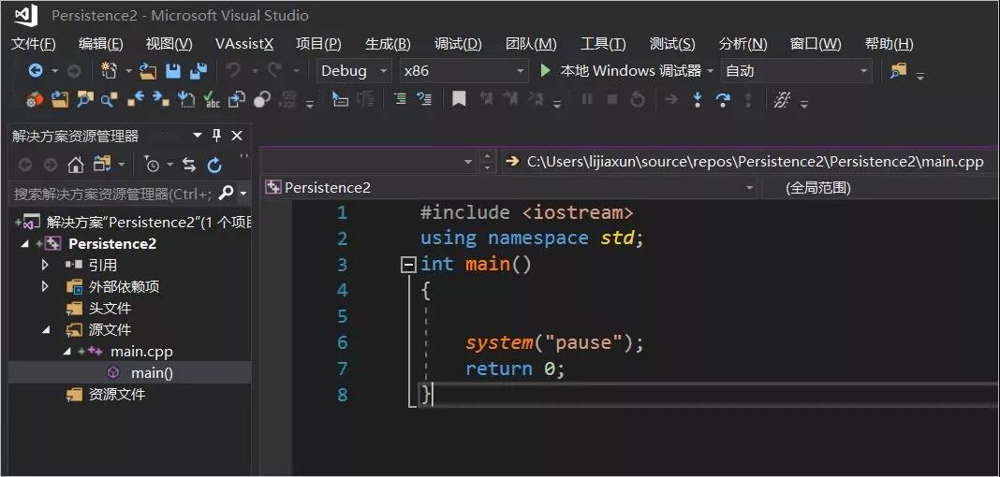
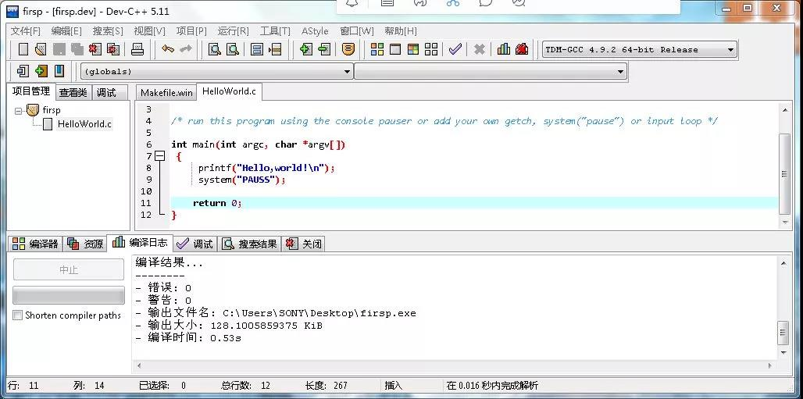
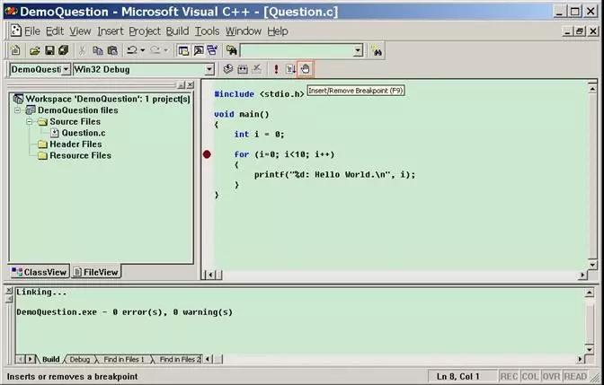
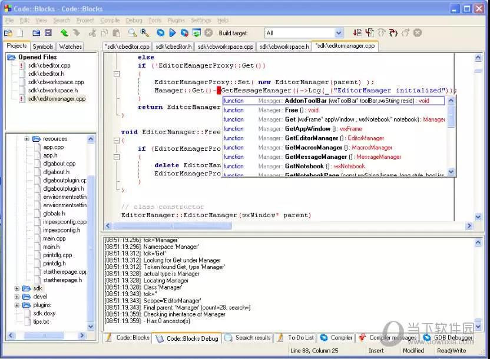
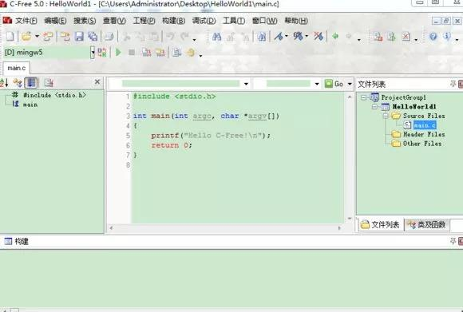
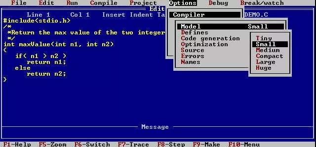

C语言开发环境，请查收！C语言开发环境 开发环境的选择， 貌似是告诉我们，
工欲善其事，必先利其器。
01
Visual Studio

Visual Studio（简称 VS），它是 Windows 下的标准 IDE，VS系列为IDE（集成开发环境），为了适应最新的 Windows 操作系统，微软每隔一段时间（一般是一两年）就会对 VS 进行升级，为目前各大公司Windows下开发的主流选择工具。虽然功能强大，但功能太多，着实不适合入门，且一些标准库函数及C语法和很多教材教程有明显差异，与学生实际不符故不推荐初学使用。同时 VS 有点庞大，安装包有 2~3G，下载不方便，而且会安装很多暂时用不到的工具，安装时间在半个小时左右。对于初学者，暂不推荐。
02
Dev C++

如果你讨厌 VS 的复杂性，那么可以使用 Dev C++。Dev C++ 是一款免费开源的 IDE，内嵌Linux GCC编译器的 Windows 移植版。Dev C++ 只有几十兆、安装卸载方便、学习成本低，开发环境包括多页面窗口、工程编辑器以及调试器等，在工程编辑器中集合了编辑器、编译器、连接程序和执行程序，提供高亮度语法显示的，减少编辑错误，还有完善的调试功能，是初学者学习C的首选开发工具，也是我力推的！
03
Visual C++ 6.0

Visual C++ 6.0（简称VC 6.0）是微软开发的一款经典的 IDE，因为早期更多的教材、资料也是基于VC6的，参考学习的资料更多，所以直到现在很多高校都以 VC 6.0 为教学工具来讲解C和C++。但VC 6.0是1998年的产品，很古老了，最近也有很多用VC的人留言各种各样的错误，其实就是在Win7、Win8、Win10 下的兼容性问题，有的甚至根本不能运行，所以不推荐使用。
04
CodeBlocks

CodeBlocks是一款开源、跨平台、免费的 C/C++ IDE，它和 Dev C++ 非常类似，小巧灵活，易于安装和卸载，不过它的界面要比 Dev C++ 复杂一些，不如 Dev C++ 来得清爽。
05
C-Free

C-Free 是一款国产的 Windows 下的C/C++ IDE，最新版本是 5.0，整个软件才 14M，非常轻巧，安装也简单，界面也比 Dev C++ 漂亮。C-Free 的缺点也是调试功能弱。可惜的是，C-Free 已经多年不更新了，组件都老了，只能在 XP、Win7 下运行，在 Win8、Win10 下可能会存在兼容性问题。
06
Turbo C

Turbo C 是一款古老的、DOS 年代的C语言开发工具，程序员只能使用键盘来操作 Turbo C，不能使用鼠标，所以非常不方便。但是 Turbo C 集成了一套图形库，可以在控制台程序中画图，看起来非常炫酷，所以至今仍然有人在使用，但已经微乎其微了。
欢迎来到C的世界